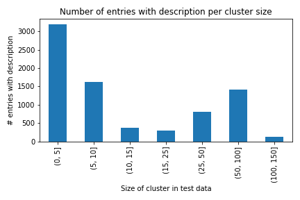
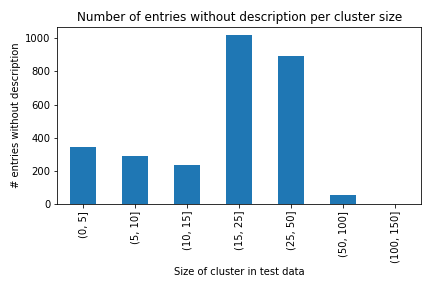
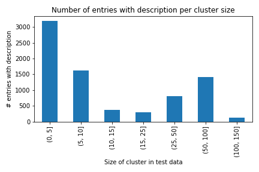
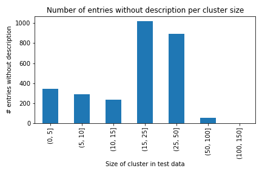

This website engages with the experiments and results of a six month student team project on the topic "Data Integration using Deep Learning" at the School of Business Informatics and Mathematics of the University of Mannheim under the supervision of Ralph Peeters and Christian Bizer (Chair of Information Systems V: Web-based Systems). We have investigated the performance of frameworks based on the tasks of matching entities (entity matching) and schemata (schema matching) across tables. The task is presented as a multi-class classification problem characterising whether a row (entity) or a column (schema) belongs to a predefined cluster/has a specific label. All of our experiments and code is publicly available in our git repository. The website is structured as follows. In Chapter 1, we give a short introduction into the use cases and the challenges that are addressed by our project. Afterwards, we continue with a brief overview on the theoretical framework needed to follow the experiments within the second Chapter. Chapter 3 establishes the algorithms we focused on followed by the creation and preparation of the task-specific datasets included in chapter 4. Subsequently, we present our experiments including our baselines in Chapter 5 in order to transition to an error analysis in Chapter 6. Chapter 7 concludes the content of this website by a discussion of the results and an outlook on further possibilities generated by our work . All of our references can be found in Chapter 8 and our datasets can be downloaded in Chapter 9 but are available for research purposes only.
According to estimations of the International Data Corporation, the amount of data created in 2025 will be around 180 zettabytes with increasing tendency. Reasons for that are increasing connection and information flow due to the world wide web. The web contains a massive amount of data in all forms. There can be structured or unstructured data and a lot of different sources which use different data models or different schemata but actually describe the same real-world entity. Moreover, information can differ in content, syntax or even in technical characteristics. Consequently, it gets quite challenging when trying to use or merge such heterogeneous data in order to compare and work with it for further applications such as online shopping, to name just one example where data from different sources need to be compared. Addressing this problem, the aim of this work is to master the challenges mentioned above and to establish different methods for both schema and entity matching.
This Chapter provides an overview of the theoretical underpinnings, frameworks as well as specific information relevant to follow our work. For this reason, we start by introducing the main tasks we are trying to solve: Schema and entity matching. We also give a brief introduction to transformer models, especially BERT-based implementations, as they form the basis for the algorithms we use and, due to limitations of standard algorithms and measures, became more and more popular in recent years.
Schema matching describes the task of matching similar or rather the same schemata and finding agreement and unity between applied structures. Database instances, for example, comprising of schemata and respective (table) columns describing the same attribute can or often need to be matched. The main challenges are size, semantic heterogeneity, generic names, esoteric naming conventions and different languages. Therefore, correspondences between the schemes should be detected in an automated or semi-automated manner. Although 1:n and n:1 approaches are possible, the scope of the object is reduced to only considering 1:1 matching as defined in the problem statement of the initial project discussion.
Entity matching, often also called identity resolution, is a crucial task for data integration and describes the exercise of finding all records that refer to the same entity, e.g. when integrating data from different source systems. Unfortunately, entity representations in real-world environments are in general neither identical nor always complete, but have to be processed at massive scale. One solution to address this difficulty is offered by comparing multiple attributes of different record representations with attribute-specific similarity measures like Levenshtein distance or advanced techniques like BERT. Newer approaches include the application of so-called table transformers which will be discussed in Section 3. Entity matching tries to allocate entities with different representations under the assumption that the higher the similarity is, the more likely two entity representations are a match [7].
In 2017, Google Brain proposed the transformer model, that based on an encoder-decoder structure and an attention mechanism showed impressive improvements over state-of-the-art methods and simplicity in adoption to a wide range of machine learning tasks, especially in the context of NLP [8]. As a result, a new language representation model named BERT was introduced in 2019 to pre-train deep bidirectional representations from unlabeled text. That resulted in a lot of possibilities as a "pre-trained BERT model can be finetuned with just one additional output layer to create state-of-the art methods for a wide range of tasks" [2]. In the context of this work, we used algorithms that are pre-trained on different BERT extensions, in particular TinyBERT and RoBERTa [9] [10].
In the following, we present different algorithms namely TURL from a class of table transformers and Contrastive Learning as a more general technique without a focus on tables. table transformers are models that not only incorporate data from individual entries, but include information from their surroundings inside the table as well. This results in models which take a whole table representation of a website or a knowledge base as input instead of only single entries like most other models do. The Contrastive Learning approach on the other hand rather tries to learn high-level features of a dataset by exploring the differences and similarities of data points.
table Understanding through Representation Learning (TURL) is a "novel framework that introduces the pretraining/finetuning paradigm to
relational Web tables" [1]. TURL is a TinyBERT based extension model that was pre-trained on around 600,000 Wikipedia tables such that it
can be applied to different tasks with "minimal task-specific finetuning". The authors show that the model generalizes well and
outperforms existing methods for example in column type annotation [1].
The basic idea of TURL is to " learn[s] deep contextualized representations on relational
tables in an unsupervised manner" and generate a framework that can be finetuned to a wide range of tasks [1].
More specifically, the TURL architecture which can be seen in Figure 3.1 consists of three modules.
At first, an embedding layer followed by a structure-aware stacked transformer, as introduced in Section 2.3,
to capture textual and relational knowledge with a "visibility matrix" that models the row-column structure
of the tables and concluded by a projection layer.

After the described pretraining procedure the model can then be applied to different proposed finetuning tasks such as entity linking, column type annotation, relation extraction, row population, cell filling, and schema augmentation.
Contrastive Learning has become a promising approach both in information retrieval [6] as well as in computer vision outperforming previous methods
in self-supervised and semi-supervised learning [5]. This framework has further been extended to a fully-supervised setting introducing an alternative
to the usual cross-entropy loss function [4] while achieving state-of-the-art results. In addition, supervised Contrastive Learning has seen recent success
in product matching which is a special form of entity matching [3].
After the pretraining step, the encoder network ideally maps each class to a well seperated cluster in the embedding space. For the final stage of finetuning
the parameters of the encoder network remain frozen and only the linear classifier is trained using the usal cross-entropy loss for multi-class classification.
In contrast to other methods, contrastive pretraining makes it much easier to learn decision boundaries for a linear classifier given a pretrained embedding space.
This makes contrastive pretraining a powerful method for further downstream tasks such as multi-class classification.
@Jannik
Chapter 4 gives an overview on the generation of our datasets and the final values contained in the sets.
Our dataset is based on the Web Data Commons - Schema.org table Corpus [12] maintained by the Data
and Web Science Research Group at the University of Mannheim.
For both tasks, i.e. entity and schema matching, different selection and filtering methods were applied to attain the final datasets.
However, in a first action, chosen tables for both taks were cleaned using a two-step approach in order to extract English language data only.
We applied a TLD-based method to first filter our data on English internet domain
endings, e.g. ".com",or ".uk", and afterwards applied the fastText language detection algorithm [11] on each single row in
the remaining tables to check whether it belongs to the English language and if not we discarded them.
Further cleaning of selected tables and further preprocessing approaches specific to each task of schema or entity matching will be explained in detail in the following.
To get a better understanding of hard-to-distinguish cases, we provide some examples in Table 4.1. The upper table illustrates three examples of so-called hard non-matching cases. A hard non-match describes two entities which are semantically very close but belong to different classes. As one can see, some entities only differ in some characters, resulting in different cluster assignments. On the other hand, hard matches relate to two entities which belong to the same cluster but are not as close in space as other entities within that class. This can easily happen when the same entities differ in the character length of their respective name column. For hard non-matches we provide the corresponding cosine similarity between a query entity and its closest match while for hard matches we show the cosine metric between a query and its closest match within the same cluster. In both cases, the cosine similarity is computed by comparing the vectorized entities obtained by Doc2Vec.
| Entity | Most Similar Entity | Cosine Metric |
|---|---|---|
| Lifeproof Case Iphone 11 | iPhone 11 Pro Max case | 0.9776 |
| Lego Star Wars The Complete Saga DS | Lego Star Wars: The Complete Saga - Wii Video Game | 0.9367 |
| 10 2010 Audi A5 Quattro Fuel Injector 2.0L 4 Cyl Bosch High Pressure | 18 2018 Audi A5 Quattro Fuel Injector 2.0L 4 Cyl Standard Motor Products | 0.9771 |
| Entity | Matching Entity | Cosine Metric |
| iPhone 11 Pro Max case | For iphone 11 pro x xr xs max cell phone case cover with camera lens protection | 0.8514 (below top 30) |
| 08MP-08FPS 90° Elbow Long Forged | 08MP-08FPS 90° Elbow Forged | 0.9062 (15th place) |
| Jasmine Dragon Pearls Green Tea | Jasmine Dragon Pearl Jasmine Green Tea | 0.9501 (5th place) |
| Number of tables | Number of Entities | |
|---|---|---|
| Train | 1,345 | 11,121 |
| Validation | 885 | 7,154 |
| Test | 1,331 | 10,655 |
As a basis for schema matching, it was important to gather a large amount of diverse table data to create a sufficient dataset
with at least 200 different columns that were later on used for matching. Thereby, the chosen columns should be evenly distributed within large, mid-sized and small tables,
and their content should represent different data types, different lengths as well as hard cases for distinction.
We started with 668,593 tables that were taken into account. With the described removal technique of non-English tables the dataset was reduced to
267,283 tables.
To create a solid database, we chose the 20 largest categories of Schema.org in order to gain a large amount of
tables that contain a sufficient amount of data. Due to the vast amount of disorderly data we initally selected 207 columns to be able
to additionally reduce the column set in case that we would detect further misfitting criteria during the following data preparation and preprocessing.
However, as we wanted to make sure that all tables contain at least three of the selected columns for schema matching, our initial dataset was already reduced to 79,318 tables.
Further, in order to create a useful dataset, we reduced our sample of tables by checking for tables with more than ten rows,
less than 50% NAs within selected columns as well as less than 15% NAs within relevant columns in the entire table.
The resulting 54,190 tables were then divided into
a training and test set by performing a multi-label stratified shuffle split with three separations (random state = 42) resulting in 44,435 training tables and 9,894 test tables.
We chose to perform a multi-label stratified shuffled split [15] to not only distribute the different categories
but also the selected columns in each category proportionally between the training and test set.
To compare different input and training sizes later on, our training data was further divided into a medium as well as small sized training set. Again,
we performed a multi-label stratified shuffled split to distribute the data and especially columns proportionally making sure that all selected columns
were represented in all datasets. Hereby, the large training set of 44,345 tables contains all 9,776 tables of the medium-sized training and the medium-sized training
set contains all 2,444 tables of the small training set.
As a means to create a clean and reliable set of test tables, the entire test set containing 9,894 tables was manually checked for languages other than English, wrong column
labels as well as multiple, missing or odd entries such as symbols, for example. Thereby, about 10% of the tables were removed with more than 50% due to other foreign languages,
hence reducing the test table size to 8,912.
The distribution of all tables as well as tables within each selected category is presented in the Table 4.3.
| Small Training Set | Medium Training Set | Large Training Set | Test Set | # of selected columns within each category |
|
|---|---|---|---|---|---|
| All | 2,444 | 9,776 | 44,345 | 8,912 | 207 |
| Product | 1,033 | 4,256 | 19,367 | 3,839 | 46 |
| Music Recording | 318 | 1,102 | 5,031 | 1,097 | 7 |
| Event | 248 | 1,007 | 4,563 | 1,000 | 11 | Creative Work | 221 | 869 | 3,925 | 876 | 23 | Recipe | 195 | 770 | 3,522 | 727 | 24 | Person | 163 | 690 | 3,148 | 545 | 24 | Local Business | 123 | 490 | 2,209 | 381 | 23 | Place | 38 | 160 | 728 | 131 | 5 | Hotel | 38 | 156 | 701 | 117 | 8 | Book | 29 | 118 | 537 | 65 | 12 | Restaurant | 20 | 79 | 353 | 61 | 12 | Music Album | 9 | 41 | 189 | 42 | 4 | TV Episode | 9 | 38 | 162 | 31 | 3 |
| Gtin | Example |
|---|---|
| gtin13Product | 7321428469419 0 8032767441293 0 8032766030245... |
| gtin14Product | 00032054003584 00032054003560 00032054003591 ... |
| Recipe Description Type | Example |
| headlineRecipe | Lemony Angel Hair Pasta with Crab Turkey Spina... |
| nameRecipe | Peach Cake Recipe using Fresh Peaches Canned G. |
For running the experiments we used the resources from the University of Mannheim (dws-server) as well as the resources from the state Baden-Württemberg, the bw-uni-cluster. With that we had access to different setups to efficiently run the experiments. Furthermore, we had enough storage space to store the different datasets created for the experiments.
In the case of entity matching, we used three different baseline models to be able to compare the results of our algorithms. We included one tree-based model in Random Forest, and two BERT-based models in TinyBERT and RoBERTa, because, as mentioned in Section 3.1, TURL is based on TinyBERT. All the baselines were modelled as multi-class classification that were presented a concatentation of the entity name and a description in case of the product dataset. The results are presented in Table 5.1 below.
| Random Forest | TinyBERT | RoBERTa | |
|---|---|---|---|
| Product | 0.8684 | 0.8329 | 0.8958 |
As a baseline for schema matching, both tree and BERT-based models were used. As a tree based model, we applied a Random Forest with
both value and meta-based data.
The value based datasets were created with TF-IDF, whereby a global and a binary approach was used.
For TF-IDF the data was preprocessed with the following steps: The concatenated text of each column was lower-cased and tokenized and
stopwords as well as punctuation were removed.
Based on the meta data, following variables were created as a data base for the meta data approach model:
a binary variable that indicates whether or not the column content was structured within brackets such as "{}";
a variable that gives the length of the value;
a variable with the average word length and
a binary variable that indicates whether the column includes dates.
To keep the original structure of the data, no preprocessing was performed. Hereby, the regular TF-IDF approach yielded a micro F1 score of 0.35 and the binary TF-IDF
approach yielded a micro F1 score of 0.27 while the meta approach yielded a micro F1 score of 0.12.
Further, we used BERT-based models such as BERT, RoBERTa, TinyBERT and DistilBERT as baseline models for the
respective small, medium as well as large training dataset. As a database the concatenated values of the target columns were used.
To keep as much information as possible, again, no further preprocessing was applied. The models were trained with 25 epochs. As it can be
seen in the results in Table 5.2, the models performed quite different on the small and medium datasets. However, when looking at the
results of the large training dataset, all models performed quite well and, except for TinyBERT,
all models reached a performance of 0.80 micro F1 score.
| DistilBERT | BERT | TinyBERT | RoBERTa | |
|---|---|---|---|---|
| Small | 0.6089 | 0.7327 | 0.6982 | 0.6601 |
| Medium | 0.6166 | 0.7623 | 0.7044 | 0.7569 |
| Large | 0.8019 | 0.8014 | 0.7593 | 0.8030 |
As mentioned earlier, TURL is based on TinyBERT so that TinyBERT represents a feasable baseline model and will mainly be used for comparison and evaluation of the results in the subsequent chapters.
TURL does already offer several predefined tasks to evaluate the pre-trained framework on [1].
Hereby, the task of column type annotation was evaluated to be the most suitable for both entity and schema matching. In order to pretain the model with our selected tables and
entities and to perform the task of column type annotation the data has to be structured as a nested list where each table was represented by an inner list itself containing
table id, page title, Section title as well as further lists of headers, cell content and the column types.
The given input representation of tables for the task of column type annotation can be found within the README file within the TURL
git repository.
Further information on the pretraining and the respective finetuning task can be found in TURL: table Understanding through Representation Learning [1].
For Entity matching we experimented with two different approaches. One setting was based on transposing the matrix, such that
each column was modelled as one entity as the prebuild framework aggregated the column information. In the second case
we changed the TURL code itself to be able to aggregate over rows instead of columns. For schema matching the proposed column type annotation was directly applicable.
Detailed information on settings and hyperparameters adjusted during the experimentation are presented in the table below.
| Category | Inital Inputs | Adjusted/Final Inputs per Train Size | ||
|---|---|---|---|---|
| Small | Medium | Large | ||
| Training Epochs | 10 | 50 | 50 | 50 |
| Learning Rate | 5e-5 | 5e-5 | 5e-5 | 5e-5 |
| Batch Size | 20 | 20 | 20 | 20 |
| Accumulation Steps | 2 | 2 | 2 | 2 |
| Save Steps | 5000 | 50 | 125 | 650 |
| Logging Steps | 1500 | 15 | 50 | 200 |
| Warm up Steps | 5000 | 50 | 125 | 650 |
All our experiments presented in this Section build upon the previous work on supervised Contrastive Learning for product matching [3] and the respective git repository. Their model already offered the use-case of binary pair-wise classification for product matching. From there we reformulated their approach to serve as a multi-class classification framework, for both schema and entitiy matching. As this approach is not table-based anymore, we had to restructure our data in a similar way as we did for our baseline experiments. While for product matching we only had one dataset available, we conducted experiments on all three datasets for schema matching namely small, medium and large. Furthermore, for product we concatenated the name and description columns and appended the respective cluster id as the label column. For schema matching the whole column information is concatenated into one text column followed the corresponding label. In both cases we basically discarded the table content information as all entries are compressed into the same file. For contrastive pretraining we then combined training and validation sets into a single one to rely on more data. As mentioned before, the whole power of this approach builds on meaningful contrastive pretraining. It is for the same reason that for product, we decided for a large batch size to avoid noisy gradient signals. In the case of schema matching we were not able to set the batch size as high as desired due to resource contraints. This is important to note and will be discussed later. After successful pretraining we froze the parameters of the encoder network and only trained a linear classifier which is a basic feed forward neural network. For product we even experimented with unfrozen parameters but results did not outperform the frozen setting. Table 5.5/5.6 summarizes our respective hyperparameter settings for the Contrastive Learning experiments. Note that for the finetuning step, we trained our models for up to 150 epochs using early stopping if validation loss did not improve significantly.
| Category | Pretraining | Finetuning | ||
|---|---|---|---|---|
| Small | Medium | Large | ||
| Training Epochs | 200 | 150 | 150 | 150 |
| Learning Rate | 5e-5 | 5e-5 | 5e-5 | 5e-5 |
| Temperature | 0.07 | 0.07 | 0.07 | 0.07 |
| Batch Size | 128 | 128 | 128 | 128 |
| Tokenizer | RoBERTa | RoBERTa | RoBERTa | RoBERTa |
@Jannik: Nummerierung anpassen + im Text auch
Within this Chapter all experimental results as well as a detailed error analysis will follow. tables 6.1/6.2 illustrate
the final F1 scores we achieved with best ascertained settings for both tasks.
| Baseline | Contrastive Learning | table-based Transformers | |||||
|---|---|---|---|---|---|---|---|
| Train Set | BERT | TinyBERT | DistilBERT | RoBERTa | Contrastive Learning | TURL 25 Epochs |
TURL 50 Epochs |
| Small | 0.7327 | 0.6982 | 0.6089 | 0.6601 | 0.7531 | 0.7457 | 0.7722 |
| Medium | 0.7623 | 0.7044 | 0.6166 | 0.7569 | 0.7664 | 0.8214 | 0.8214 |
| Large | 0.8014 | 0.7593 | 0.8019 | 0.8030 | 0.7644 | 0.8663 | 0.8684 |
In Table 6.1 we can see that TURL outperformed the baseline models as well as the contrastive learning approach.
It seems that increasing the number of epochs that TURL is trained after 25 epochs does not play a significant role for the both mid sized
and large datasets as the performance converged for both 25 and 50 epochs to the same outcomes. The size of the training dataset, however,
definitely has a great influence on the performance of the baseline models and TURL as the performances increased up to 20 percent.
For contrastive learning on the other hand, the size of the dataset only made a difference of 0.01. Hereby, there was no difference between the
In Table 6.1 we can see that TURL outperforms the baseline models as well as the Contrastive Learning approach.
It seems as if the number of epochs that TURL is trained on does not play an important role for the both mid sized
and large dataset as the performance converges for both 25 and 50 epochs to the same outcomes. The size of the training dataset
definitely has a great influence on the performance of the baseline models and TURL. The performances increase up to 20 percent points.
For Contrastive Learning on the other hand, the size of the dataset only makes a difference of 0.01. Hereby, there is no difference between the
mid sized and the large dataset.
When looking at the distribution of F1 scores for each chosen category and the differences in training sizes, the graph below clearly indicates, that
the performance increased with increasing training samples. For some categories, such as TV episode or music album, for example, the difference was rather large
while for other categories the difference is not as big. When looking at the data and column count more thoroughly, however, some columns such as number of tracks
(in music album) that are only represented in 20 tables within the medium-sized training set already achieved an F1 score higher than 0.8.
Other columns, such as names (in music album) did not reach an F1 score of 0.8 despite being represented in more than 160 tables. Hence, even though the models'
performances generally increased with a larger training sample size, this does not necessarily indicate that all columns achieve a high F1 score with more
training data. With regards to time constraints, such an in-depth look was not possible for the contrastive learning approach. But, as mentioned earlier, the
size of the training set does not seem to make a big difference.
(in music album) that are only represented in 20 tables within the medium-sized training set already achieve an F1 score higher than 0.8.
Other columns, such as names (in music album) do not reach an F1 score of 0.8 despite being represented in more than 160 tables. Hence, even though the models'
performances generally increase with a larger training sample size, this does not necessarily indicate that all columns achieve a high F1 score with more
training data. With regards to time constraints, such an in-depth look was not possible for the Contrastive Learning approach. But as mentioned earlier, the
size of the training set does not seem to make a big difference anyway.

Therefore, to deepen the understanding of the differences between the baselines, the contrastive learning approach and TURL, a more detailed evaluation with regards to the datatypes is of interest. For example, while TinyBERT and Contrastive Learning reached a micro F1 score of 0.5034 and 0.5780 respectively for the type geolocation, TURL outperformed them with a micro F1 score of 0.8857. Also floats and integers reached much higher micro F1 scores with TURL. For datetime, the performances of the three approaches were quite similar. Only the type string was detected more accurately by the baseline model and the contrastive approach. The following Table 6.2 shows detailed F1 scores for each data type and model applied with the best Therefore, to deepen the understanding of the differences between the baselines, the Contrastive Learning approach and TURL, a more detailed evaluation with regards to the datatypes is of interest. For example, while TinyBERT and Contrastive Learning reach a micro F1 score of 0.5034 and 0.5780 respectively for the type geolocation, TURL outperforms them with a micro F1 score of 0.8857. Also floats and integers reach much higher micro F1 scores with TURL. For datetime, the performances of the three approaches are quite similar. Only the type string is detected more accurately by the baseline model and the contrastive approach. The following table shows detailed F1 scores for each data type and model applied with the best performing data type highlighted for each model.
| Data Type | Model | ||
|---|---|---|---|
| TinyBERT | Contrastive Learning | TURL | |
| strings | 0.7797 | 0.7906 | 0.7651 |
| datetime | 0.7575 | 0.7363 | 0.7670 |
| float | 0.4988 | 0.4933 | 0.7920 |
| integer | 0.5436 | 0.4980 | 0.7235 |
| geolocation | 0.5034 | 0.5780 | 0.8857 |
In addition to differences in data types in general, when looking into the data and tables more thoroughly, further criteria amount for differences in the models' performances. As the analysis of different data types already suggests, all baseline models performed fairly well on string input as they seem to be more easily identifiable when being concatenated as input. At the same time, clean column content of strings or integers only performed similarly well for both baselines, CL as well as TURL. Clean column content, as shown in the example of bookformat in Table 6.2 only contains one data type and no mixtures. Compared to the baselines, TURL performed significantly better on columns containing rather complex content. Complex content can be mixtures of strings and integers or floats combined. Examples of such complex columns are opening hours, specification of places or address columns for different categories such as person, hotel or local business. Table 6.2 below shows some examples of clean, e.g. total time, and complex, e.g. address, columns as well as the respective F1 score of the models.
| Column | Data Type | Example content | TinyBERT | CL | TURL |
|---|---|---|---|---|---|
| Hotel.address | string | {'addresslocality': '130 Clyde St', 'addresscountry': 'UK', 'addressregion': 'Glasgow', 'postalcode': 'G1 4LH'} |
0.4727 | 0.3909 | 0.9099 | Person.address | string | {'addresslocality': 'Sechelt', 'postalcode': 'V0N 3A0', 'streetaddress': '5498 Trail Avenue', 'addresscountry': 'Canada', 'addressregion': 'British Columbia'} |
0.3387 | 0.1935 | 0.8197 | Place.geo | geolocation | {'longitude': '-9.47658792E1', 'latitude': '3.00983072E1'} | 0.5118 | 0.7165 | 0.9512 |
| Recipe.totaltime | datetime | PT20M | 0.8053 | 0.8114 | 0.8857 |
| Book.bookformat | string | [Hardbound, Paperback, e-Book] | 0.8966 | 0.9310 | 0.8621 |
| Column | Data Type | TinyBERT | CL | TURL |
|---|---|---|---|---|
| Product.gtin12 | integer | 0.5163 | 0.4402 | 0.5707 | Product.gtin13 | integer | 0.6859 | 0.6963 | 0.7250 | Product.gtin14 | integer | 0.0556 | 0.0555 | 0.2500 |
| Product.gtin8 | integer | 0.3858 | 0.3070 | 0.4368 |
| Product.gtin | integer | 0.1429 | 0.0989 | 0.4706 |
Unlike schema matching, the results for entity matching appear slightly different (see Table 6.2). RoBERTa, as our best performing
baseline with a F1 score of around 0.90, outperforms the TURL model by far (best F1 score: around 0.76). Moreover,
the Contrastive Learning (frozen) model exceeds these scores by almost 4%, ending up with the best F1 score of around 0.94.
To go deeper into analysis, we compared the best performing models of each category namely RoBERTa for the baseline,
TURL (the transposed version) and Contrastive Learning (frozen) on different characteristics. We therefore filtered
on specifically created features or existing variables and calculated single F1 scores on each possible value. For TURL, we
had to calculate an averaged F1 score since predictions were not given at hand, but rather we were
directly provided with F1 scores per cluster. This approach helped us finding intrinsic differences between the models.
As Figure 6.2 illustrates, the different sizes of train data already show various impact on the F1 score.
We binned the sizes of train data appropriately to our circumstances and calculated F1 scores separately on the
given bins. Although all indicate an increasing F1 score for increasing sizes of train data, the baseline and TURL
start at around the same level whereas Contrastive Learning achieves very good results with only zero to five training
instances given. The baseline and Contrastive Learning then both increase steadily, the baseline having a more steep
curve and end up at a score of 1.0. On the other hand, one might notice that TURL replicates a more diverse curve
regarding the train sizes and indeed only achieves very good results for larger sets.
| F1 Baseline | F1 TURL | F1 Contrastive Learning | |
|---|---|---|---|
| With description | 0.8054 | 0.7534 | 0.9309 | Without description | 0.9090 | 0.7018 | 0.9395 |

 



| Baseline | TURL (averaged) | Contrastive Learning | |
|---|---|---|---|
| Overall F1 | 0.8329 | 0.6453 | 0.9379 | F1 on hard cases only | 0.7102 | 0.5509 | 0.8458 |

 |
 |
 |
As for the task of schema matching, the experiments clearly show that table-based transformer models such as TURL are highly relevant and
can be applied advantageously to identify and match identical schemata. In particular, complex content that seems rather confusing
and hard to differentiate by all BERT-based models can be successfully identified and matched by TURL. Most notably, as result examples show,
table-based transformers utilize and rather focus on context to draw inferences about specific columns content.
Further, as is to be expected, larger amounts of training data clearly improve the model's performance. Especially for hard matching cases more training makes a huge difference.
However, while clean table content seems to provide good results for both baseline as well as table-based models, specific hard cases such as product gtins,
despite the large amount of data, still seemed to be rather difficult to differentiate. Taking this as an example, one could further look into the specific
column content of hard matching cases and possibly identify noise, other misleading content or further relevant context information.
Moreover, the test data already yielded roughly 10% of noise, mainly due to languages other than English, we assume that there are also roughly 10 percent of
noise within the training data. Hence, further cleaning and investigation of the column content could give more insights and potentially lead to better
model performance as well.
Drawing a conclusion on the task of entity matching, it is remarkable that overall Contrastive Learning by far
outperforms our other models and TURL indeed achieves only comparably poor results. This is in great contrast to
the schema matching results. Since the column type annotation as the chosen finetuning task is in general more applicable
for schema matching where context of columns plays a more crucial role it is not surprising that results for schema matching
are better than for entity matching. Nevertheless, we tried to adapt the model by transposing our input for TURL such that
we could still use the model at hand which therefore yet works quite well. Trying to transform the TURL model structure on the other hand
seems to be working a little less successful in comparison.
Meanwhile, Contrastive Learning being a non table-based approach rather tries to learn an embedding space to better distinguish between various entities. This approach
seems to work well for product matching but performs poorly on the task of schema matching. This is not surprising as contrastive learning does not utilize
the table context information necessary to perform well on schema matching.
With regard to further work that can be applied to the tasks of data integration and transformer models, we also suggest to gather more training data and
gain more insights on other categories next to the already chosen ones. Additionally, due to time restrictions, we did not focus extensively on hyperparameter
tuning during our project. Therefore, further experiments and adjustment of different hyperparameters within TURL, such as learning rate,
could also lead to better results.
As data integration using deep learning is still considered as new ground, further table-based models such as encoder-decoder transformer models [16]
or hierarchical table transformers (HTT) [to be done], could be investigated and used for further experimentation. At the same time, due to time limitations, our project team was not able to dive deeper into the
analysis and exploration of contrastive learning. As described above for schema matching we only managed to run pretraining with a batch size of 128. Since pretraining
is a crucial part of the contrastive approach, it is worth trying to experiment with a batch size of 1024 (as we did for product matching). Moreover, further
experimentation on hyperparameters such as learning rate, temperature or augmentation would also be a possibility for improvements and further insights.
As a last point, it is to mention that until now entity and schema matching was only looked at as separate tasks.
One might find it of interest to combine the two tasks in an iterative manner in order to deal with the mentioned challenges that occur in web data integration.